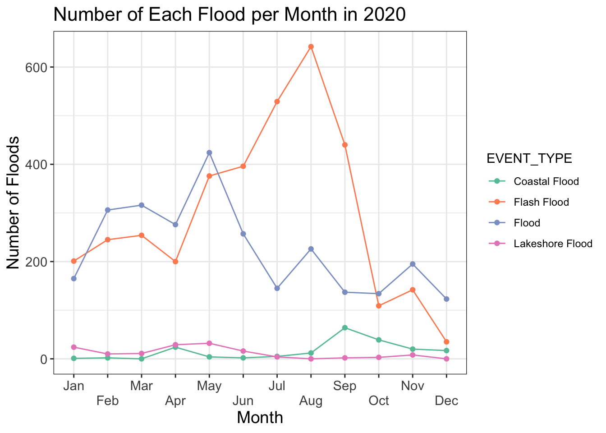
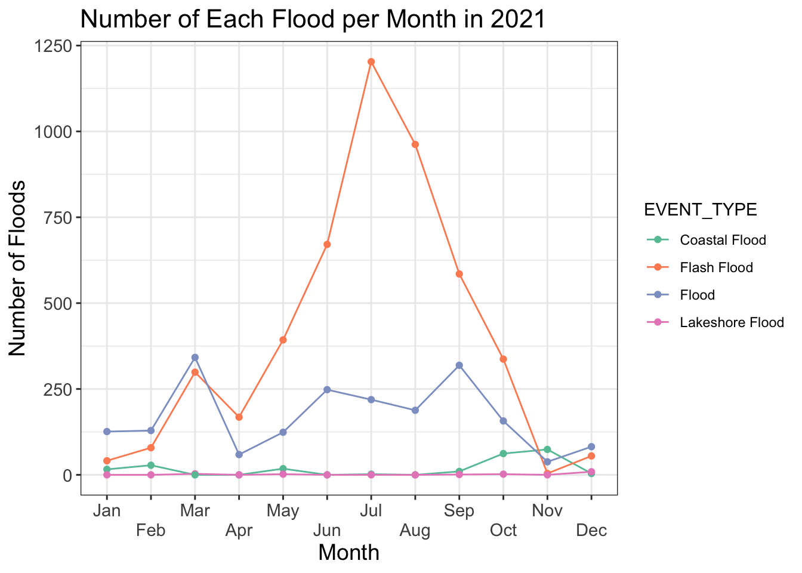
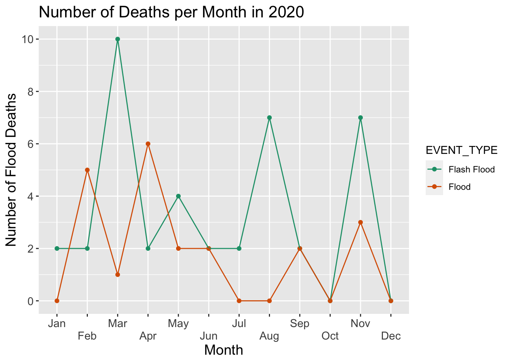
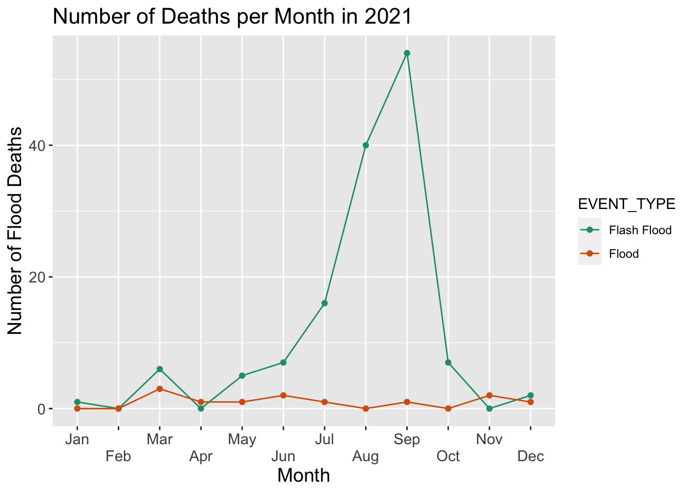
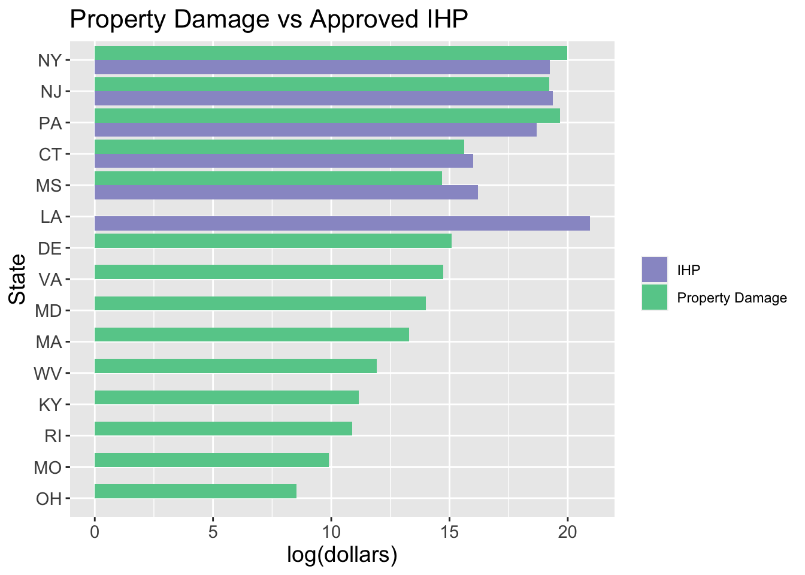

Dangerous Floods: Exploratory Data Analysis Report

1 Motivations and Initial Questions
Floods are the most common natural disasters in the world.
2 The Data
The data for this natural disaster analysis begins with two datasets from the National Oceanic and Atmospheric Administration’s (NOAA) National Weather Service (NWS) and two datasets from the Federal Emergency Management Agency (FEMA).
2.1 NOAA
Data from NOAA provides recordings of all storm events from 2020 and 2021. Data sets from each year provide significant information including the beginning and ending time and date of the disaster, the type of disaster, the location of the disaster, as well as injuries, deaths, and property damage as a result of the disaster. In each year, around 61,000 storm events occurred resulting in around 61,000 rows with 17 variables for each dataset. The raw data can be found here.
2.2 FEMA
One of the datasets from FEMA is the Disaster Declarations Summary which provides information on all federally declared disasters beginning from the year 1953. The data lists the disaster declaration type of either a major disaster, fire management, or emergency declaration. Additionally, a more specific description of the incident is provided as variable incidentType as well as what recovery program was declared for the disaster. The other FEMA Disaster Summaries dataset provides information on financial assistance provided to the communities affected by select events. It includes the number of approved Individual Assistance requests, and individual, public assistance, and hazard mitigation grant amounts. The raw data can be found here.
3 Data Organization and Cleaning
3.1 Dates and Disaster Event
The first step in organizing the data to prepare for exploratory data analysis is filtering all the data sets to only include the disaster event of floods in the years 2020 and 2021. Both NOAA datasets are already filtered by year, so they were then filtered to contain rows where the variable EVENT_TYPE included the string Flood. Following this filter, the NOAA datasets in 2020 and 2021 include the injury, deaths, and property damage for flash floods, floods, coastal floods, and lakeshore floods. Additionally, the data from the FEMA Disaster Declarations Summary was filtered so that the variable incidentType only includes floods, severe storms, coastal storms, tropical storms, tsunamis, typhoons, and hurricanes that began in 2020 and 2021. Although all of these disasters are not explicitly floods, they were still included in analysis as they are disasters may have resulted in flooding in communities.
3.2 Joining
The assistance data from FEMA includes aid provided to communities from select disasters. This data set does not provide the location or type of disaster but rather only includes the unique number assigned to each disaster by FEMA. The Disaster Declarations Summary from FEMA also includes the unique disaster number along with location and disaster type. These two data sets were combined using a left_join so that every row in the Disaster Declarations Summary data now includes the aid provided from the assistance data.
3.3 Damage to Property and Crops
The final step in cleaning the data for exploratory data analysis was converting DAMAGE_PROPERTY and DAMAGE_CROPS from the NOAA datasets to dollar values. The values for these variables were characters with a decimal and a “K” for thousands of dollars or “M” for millions of dollars. To convert to numerical dollar values, the characters “K” and “M” were extracted from each variable column and each column was then converted to a numeric value then multiplied by 1000 or 1000000 depending on whether the extracted character was a “K” or “M” respectively.
4 Exploratory Data Analysis
4.1 Summary of Floods
To begin the exploration of the most dangerous types of floods across the United States, I first looked at the most commonly occurring kinds of floods. For each year of 2020 and 2021, I created a line graph to visualize the number of flash floods, floods, coastal floods, and lakeshore floods over time and the results are in Figure 1 and Figure 2 below. To better understand the frequency of the different types of floods, I will define each kind. Flash floods are defined as floods that are caused by heavy rainfall over a short period of time (typically 6 hours or less). Floods are more long-term and often take place in dryer areas lasting days or weeks. Coastal floods occur when seawater submerges dry coastal land from rising tides. Lakeshore floods are similar to coastal floods but occur from smaller bodies of water submerging land.

In both 2020 and 2021, the most commonly occurring floods are flash floods and normal floods compared to coastal and lakeshore floods. During the beginning months of the year, there are more floods than coastal floods. However, by May in each year, the number of flash floods spikes quickly to occur more than 3 times more often than that of normal floods. The period of time in which flash floods occur more frequently than floods is between June and October in 2020 and between April and October in 2021. This coincides with the designated hurricane season in the United States which takes place between June and November. Hurricanes quickly bring strong winds and extremely heavy rainfall resulting in flash flooding.
A pattern can also be observed from normal flooding. In 2020 and 2021, the most floods occurred in May and March respectively. Both months are in the spring season which begins in March and ends in June. Following the winter season, temperatures begin to increase in spring resulting in melted snow which, in conjunction with spring rains, will result in flooding.
4.2 Summary of Deaths
I next look at the total deaths, summing both direct and indirect, for each flood type to determine if the most common type of floods are also the most dangerous.


In both years, zero direct deaths and indirect deaths were reported from coastal floods and lakeshore floods. This confirms the hypothesis that the more frequently occurring floods and flash floods result in more deaths and are therefore more dangerous. Additionally, on average, flash floods are more deadly and dangerous than any other flood.
In 2020, Figure 1 shows that the most flash floods occurred in August. While there was a spike in the number of deaths in August, the most deaths from flash floods was in the month of March. Similarly, in 2021, Figure 2 depicts July having the most flash floods but the most deaths occurring in September with over 50 deaths. I continue my analysis of the most dangerous floods by looking closer at the flash floods in September of 2021 that resulted in over 50 deaths.
4.3 Floods Resulting from Hurricane Ida
I first looked at the disaster events that occurred in September of 2021 that lead to either direct or indirect deaths. Filtering the NOAA 2021 dataset , I discovered that there were a total of 33 such events that were flash floods mostly taking place in New York and New Jersey. Of these 33 flash floods, 31 of them contained the string “Ida” in the EPISODE_NARRATIVE column. This suggests that Hurricane Ida and the remnants of Hurricane Ida in September of 2021 brought about deathly flash floods to the communities on the east coast. Hurricane Ida is known as the most deadly natural disaster in the United States in 2021.
I now look at all disaster events in 2021 that occurred as a result of Hurricane Ida, as declared by NOAA, based on the appearance of the string “Ida” in the EPISODE_NARRATIVE column. I also filtered the FEMA data to contain only those episodes with the appearance of “Ida” in declarationTitle. I wish to compare the total property damage in each state affected by Hurricane Ida to the total amount approved for the Individual and Households Program (IHP). The IHP provides services to individuals and households affected by a disaster. Are those states with large damages to property getting the necessary aid from FEMA?

Taking the NOAA data on floods from Hurricane Ida, I created a dataframe that provided the total property damage for those states affected by the hurricane. The FEMA aid for Hurricane Ida was also organized into a dataframe that provided the total amount approved for the IHP for those states affected by the hurricane. Figure 5 provides a comparison of total property damage to IHP aid for those states. Of those 14 states with reported property damage from Hurricane Ida, only 5 states were reported to have received IHP aid from FEMA. For Mississippi, Connecticut, and New Jersey, the total amount approved for the IHP surpassed that of the total property damage in the state. With the exception of Delaware, those states with close to $3 million or less in property damage did not receive aid for the IHP.
It is also important to note that Louisiana was reported as having the highest amount approved for the IHP from Hurricane Ida at $1,241,154,772. However, NOAA had no reported property damage in Louisiana from Hurricane Ida. This may be a result of missing data and should be looked at further.
5 Conclusions and Future Work
An exploratory data analysis on the flood disasters in the United States in 2020 and 2021 revealed patterns in their timely occurrence and disastrous tendencies. Flash floods and normal floods are the most commonly occurring floods with more flash floods taking place during hurricane season and more normal floods taking place during the transition from winter to spring. Flash floods are the most dangerous and deadly types of floods, especially flash floods resulting from hurricanes. Looking closer at one example, Hurricane Ida in 2021, demonstrated the relationship between the total property damage and IHP aid approved for states affected by such a disastrous hurricane. Even states with hundreds of thousands of dollars in property were not reported as receiving approved aid for the IHP.
Further analysis could be conducted with more data. The assistance data from FEMA only provides the aid provided by disaster number. This consolidates the assistance to a disaster that occurred in a state. Getting data that shows the aid provided to individual cities and counties would provide for an analysis on which communities are receiving more aid for the same disaster.